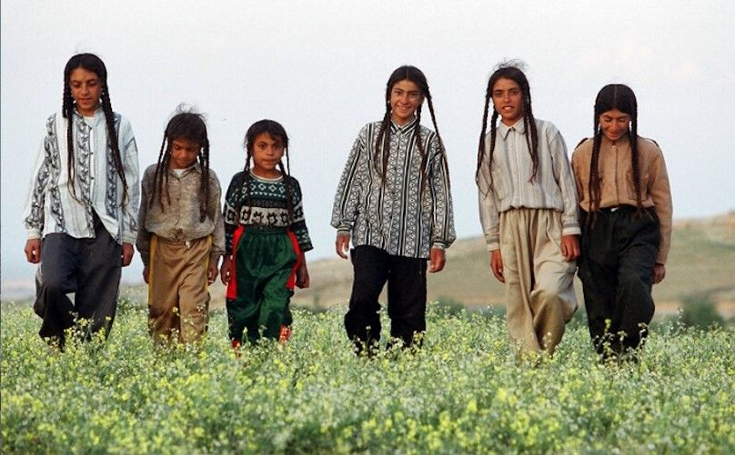
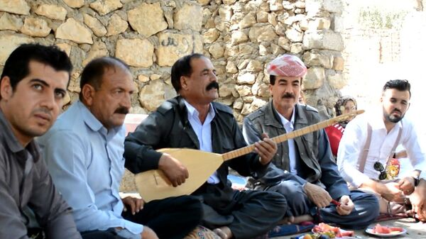
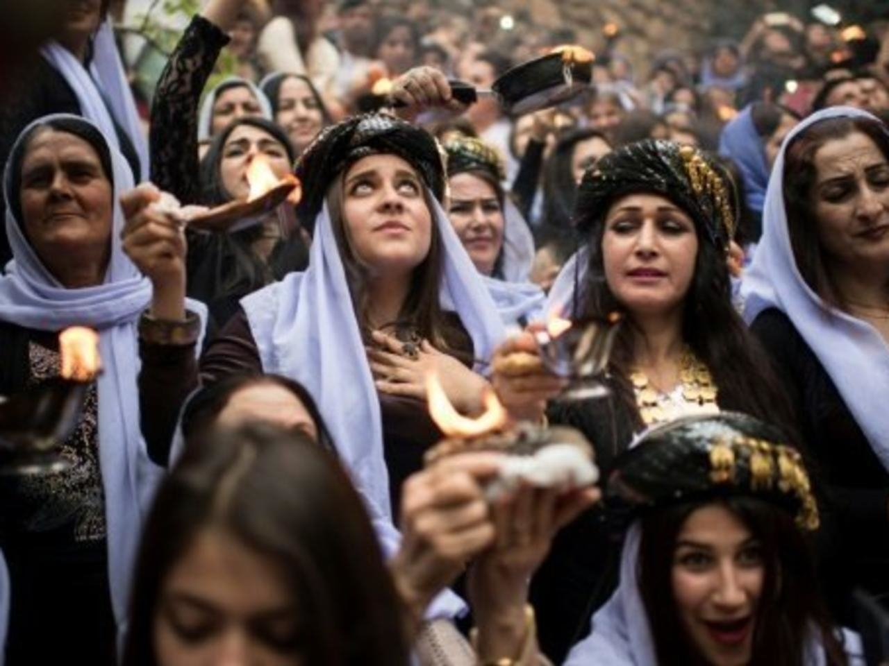

Кто такие езиды и почему их называют самым странным и закрытым народом на Планете.

По одной из версий, езидами зовут потомков вавилонян, исторической родиной которых является Месопотамия. Необычное вероисповедание этих людей - «езидизм» - имеет сходства с несколькими современными религиями и уходит корнями в тысячелетия.
Необычны и традиции езидов, которых называют едва ли не самой закрытой нацией в мире. И несмотря на то, что о существовании этого народа знает далеко не каждый, в мире сегодня насчитывается не менее миллиона представителей.
Где можно встретить Езидов?

Национальность сегодня распространена в Сирии, Ираке, Турции, но в связи с военными перемещениями езиды теперь встречаются в России, Армении, Грузии и кое-где в Европе. По самым скромным подсчетам по миру зафиксирована численность в полмиллиона езидов, но неофициальные свидетельства претендуют на цифру в миллион. Согласно общепринятому мнению езиды - лишь обособленная группа курдов. При этом сами езиды категорически отвергают подобные теории, считая свою национальность уникальной и отрицая такое родство.
Международные этнографы признали народ отдельной этноконфессиональной группой. Армения пока единственная, где выпускается учебно-художественная литература на езидском и сам язык официально изучается в образовательных учреждениях.
Религия Езидов

Езиды зовут свое верование "Шарфадин". Эта религия содержит в себе сразу несколько древних черт вероучений междуречья. К примеру, кровлю езидского храма не отличить от древних армянских церквей. Приводят историки и исламские элементы космологии, культ поклонения авраамическим пророкам (Иисусу, Мухаммеду, Аврааму), святым именным храмам. Одним из главных божеств езидов является павлин, параллельно религия предусматривает солнцепоклонничество. Подобно исламу езидизм использует арабские чины духовенства (пеш имам, мулла, факир), обряд обрезания, некоторые идентичные посты и праздник жертвоприношения. Езиды цитируют мусульманских пророков. Езидское богослужение вращается вокруг святой Троицы, обличенной в Боге, архангеле Малик Таус (ангел-павлин) и шейхе Ади.
Главные долги и запреты каждого езида!

Грузинская община
Первостепенный долг представителя национальности – праведность. Езиду нельзя убивать, воровать, совершать подлость, одеваться в синее (этот цвет считается божественным) и, как уже упоминалось, бракосочетаться с иноверцами. Много в езидизме пищевых запретов. Например, запрещено употребление свинины, петуха, капусты, алкоголя. По средам нельзя принимать ванны и бриться. Копать могилу умершему езиду позволено только представителю его религии.
Нельзя произносить слова, корни которых фонетически сопряжены с «дьявол». Их принято заменять синонимами. Известны и запреты, связанные с тремя стихиями: огнём, землёй, водой. Корни таких предписаний тянутся из зороастрийского учения, воспрещающего осквернять вышеупомянутое.
Место женщины в езидском обществе

В езидизме женщины почитаются едва ли не больше мужчин. При этом хозяином в доме выступает последний. На нем лежит вся ответственность за семейное благополучие. Часто случается, что езидки ходят на работу, чаще в том случае, если финансов недостаточно. В далеком прошлом супруги-езиды усаживались за стол отдельно, сегодня по согласованию сторон допускается традиционный вариант совместного приема пищи. На крупных банкетах по-прежнему сохраняется гендерное разделение. Женщина может свободно посещать богослужения, но молится на своей стороне. Одежда езидки обязана быть строгой и закрытой. Правда, молодежь не всегда придерживается вековых традиций.